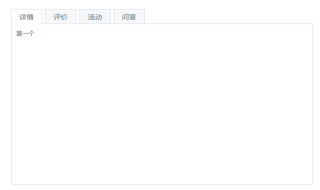

jQ编写一套选项卡，当前页状态要突出显示

附加题：采用面向对象的方式，原生js/jq编写一套选项卡:
- 在一个页面中，生成两个选项卡实例，各自独立运行，互不干扰
- 当前选择的选项卡要突出显示
- 通过设置参数，默认显示第几个选项卡
- 通过设置参数，定义触发切换的事件类型，例如："click","hover"
- 不传参，有默认参数，选项卡正常运行
- 通过class来找元素，不通过id来找,根据class="tab"来启动选项卡，保证所有选项卡正常运行；
- 参考网址：http://amazeui.org/javascript/tabs